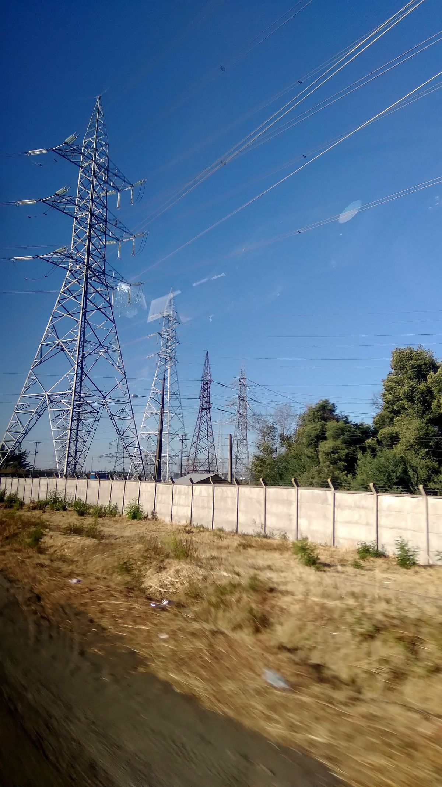
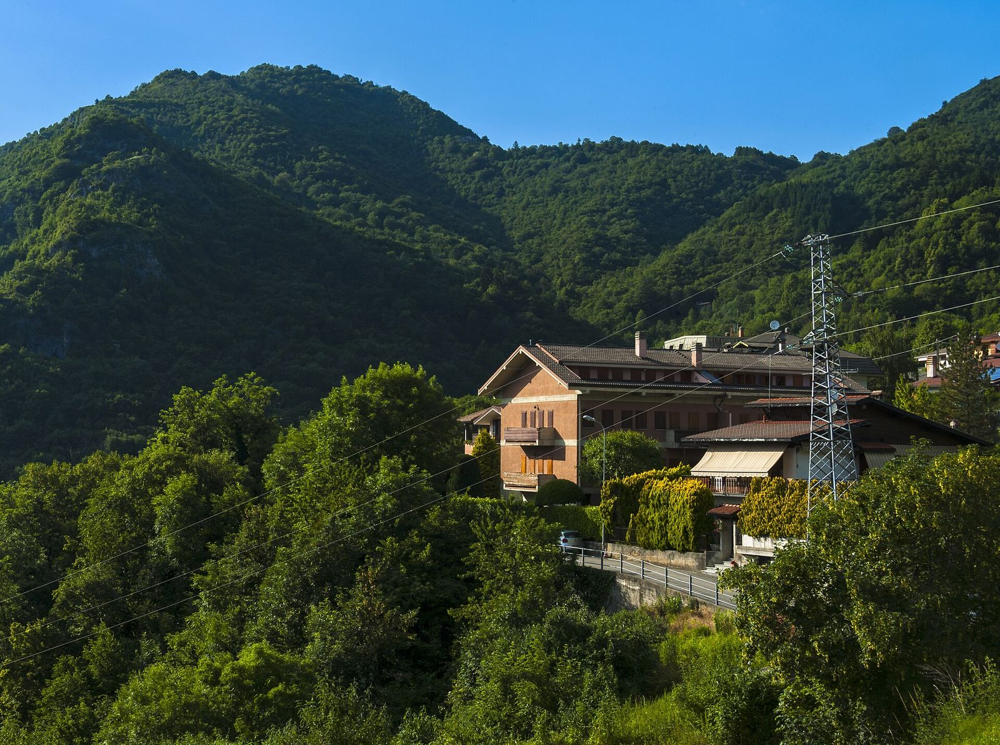

Inspección
Registra lo que se encontró en terreno.
- Datos del lugar
- Medidas y coordenadas
- Fotografías y hallazgos
NM4 · Unidad 3 · Comunicación para el mundo laboral
Aprenderás a transformar notas y fotografías de terreno en un informe claro. Después completarás un caso en la tablet.


¿Qué cambió entre los dos textos?
Copia el objetivo. Al final anotarás también las cinco partes de un hallazgo.
Un informe técnico explica qué se observó, con qué regla se comparó y qué se recomienda hacer.
Describe sin opinar.
«Se observa corrosión en la base.»Incluye cifras y unidades.
«A 5,2 m del eje.»Enfócate en lo observado.
«Se midió», «se identifica».Indica dónde se comprueba.
«Foto 3; libreta, 10:52».En simple: el informe debe ser claro, preciso y comprobable.
Registra lo que se encontró en terreno.
Muestra qué se terminó y qué falta en una obra.
Compara una instalación con una norma.
Una empresa necesitaba saber qué había dentro de la franja de seguridad de una línea eléctrica. Una consultora recorrió el lugar y registró estos datos:
Trabajarás con un caso educativo basado en esa estructura. Lee la libreta de terreno y completa solo las partes amarillas del informe.
Portada, responsables, fecha e índice.
Resumen, antecedentes, objetivos y forma de trabajo.
Datos, medidas, ubicación, croquis y fotografías.
Hallazgos, conclusiones, recomendaciones y anexos.
Hoy harás tres cosas: usar datos de la libreta, citar la evidencia y proponer una acción.
| Archivo | ITM_S04_F01.jpg |
|---|---|
| Fecha y hora | 14-09-2026 · 10:40 |
| Coordenadas UTM | E 737.921 / N 5.891.739 · huso 18H · WGS-84 |
| Altitud y orientación | 124 msnm · mirando al sur |
Regla: la coordenada de una foto es el punto desde donde se tomó, no el objeto que aparece.
📍 Ver este punto real en el mapaLa SMA exige el sistema WGS-84 y, en UTM, Este, Norte y huso (Res. Ex. N.º 2.875 de 2025). Foto real: Matías y Yordan Garrido González, Wikimedia Commons, CC BY-SA 4.0.
¿Qué ocurre realmente?
Vivienda liviana de 6,0 × 3,5 m a 5,2 m del eje, dentro de la franja.
¿Qué debería ser?
RPTD N.º 07 de la SEC, 4.9: en la franja no se permiten construcciones.
¿Por qué ocurrió?
El ocupante declaró desconocer la servidumbre.
Solo si se sabe.¿Qué consecuencia tiene?
Riesgo eléctrico y de incendio para quienes la habitan.
¿Qué se propone?
Que la empresa gestione con el propietario la reubicación.
Copia en tu cuaderno las cinco partes con su pregunta.
Idea clave: un hallazgo compara la evidencia con una regla y propone qué hacer.
Escanea el código o abre la dirección de abajo.
Confirma que aparece tu nombre y tu curso.
Las partes redactadas son tu modelo.
Los datos están en la libreta de terreno (📓).
Espera el mensaje «Entrega confirmada».
Dirección: estudiacest.com/nm4 → Clase 6 → Completar el informe
Se guarda solo mientras escribes. Si la tablet es compartida, presiona Salir al terminar.
Abrir el informe →¿Cuál es la diferencia entre una observación y un hallazgo?
Pista: un hallazgo siempre compara lo observado con un criterio.
Informe técnico de especialidad · entrega el lunes 19 de octubre.
Usarás la misma estructura de hoy.